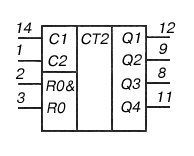
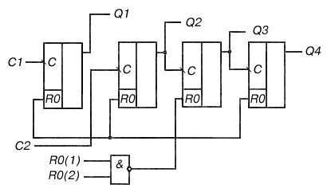

Микросхема К155ИЕ5
Микросхемы К155ИЕ5, КМ155ИЕ5 представляют собой двоичный счетчик.
Каждая ИС состоит из четырех JK-триггеров,образуя счетчик делитель на 2 и 8. Установочные входы обеспечивают прекращение счета и одновременно возвращают все триггеры в состояние низкого уровня (на входы R0(1) и R0(2) подается высокий уровень). Выход Q1 не соединен с последующими триггерами.
Если ИС используется как четырехразрядный двоичный счетчик, то счетные импульсы подаются на С1, а если как трехразрядный - то на вход С2.
Корпус К155ИЕ5 типа 201.14-1, КМ155ИД5 типа 201.14-8.

Рис. 1 - Обозначение на схеме и назначение выводов микросхемы К155ИЕ5
1 - вход счетный С2;
2 - вход установки 0 R0(1); 3 - вход установки 0 R0(2);
4,6,7,13 - свободные; 5 - напряжение питания +Uп;
8 - выход Q3; 9 - выход Q2;
10 - общий; 11 - выход Q4;
12 - выход Q1; 14 - вход счетный C1;

Рис. 2 - Функциональная схема микросхемы К155ИЕ5
Таблица 1
| Номинальное напряжение питания | 5 В ± 5 % |
| Выходное напряжение низкого уровня при Uп=4,75 В | не более 0,4 В |
| Выходное напряжение высокого уровня при Uп=4,75 В | не менее 2,4 В |
| Напряжение на антизвонном диоде при Uп=4,75 В | не менее 1,5 В |
| Входной ток низкого уровня по входам установки в 0 при Uп=5,25 В | не более -1,6 мА |
| Входной ток низкого уровня по счетным входам С1 и С2 при Uп=5,25 В | не более -3,2 мА |
| Входной ток высокого уровня по входам установки в 0 при Uп=5,25 В | не более -0,04 мА |
| Входной ток высокого уровня по счетным входам С1 и С2 при Uп=5,25 В | не более 0,08 мА |
| Ток входного пробивного напряжения по входам установки в 0 и счетным входам С1 и С2 | не более 1 мА |
| Ток потребления | не более 53 мА |
| Время задержки распространения при включении по счетному входу С1 при Uп=5 В | не более 135 нс |
| Время задержки распространения при выключении по счетному входу С1 при Uп=5 В | не более 135 нс |
| Ток короткого замыкания при Uп=5,25 В | -18...57 мА |
| Напряжение питания | не более 6 В |
| Минимальное напряжение на входе | -0,4 В |
| Максимальное напряжение на входе | 5,5 В |
| Минимальное напряжение на выходе | -0,3 В |
| Максимальное напряжение на выходе закрытой ИС | 5,25 В |
| Температура окружающей среды: | |
| К155ИЕ5 | -10...+70°C |
| КМ155ИЕ5 | -45...+85°C |
Зарубежные аналоги
SN7493N, SN7493J